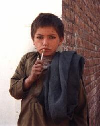

- workshops -
|  |
.2 will be held 18-19 of May in Moscow, Russia read_me 1. 2 program will include - presentations by read_me nominees - lectures, performances and shows - parties - workshops - discussions - awards ceremony and many other things. 2 Macros-center collective will be glad to help you with papers needed for getting funding or visas. 2 explores the meanings of "program," "programming," "media space," and other poorly understood concepts. |
|
.2 will be held 18-19 of May in Moscow, Russia read_me 1. 2 program will include - presentations by read_me nominees - lectures, performances and shows - parties - workshops - discussions - awards ceremony and many other things. 2 Macros-center collective will be glad to help you with papers needed for getting funding or visas. 2 explores the meanings of "program," "programming," "media space," and other poorly understood concepts. |
|
2 explores the meanings of "program," "programming," "mediaspace," and other poorly understood concepts. 2 will be held 18-19 of May in Moscow, Russiaread_me 1. 2 program will include- presentations by read_me nominees- lectures, performances and shows- parties- workshops- discussions- awards ceremonyand many other things. 2 Macros-center collective willbe glad to help you with papers needed for getting funding or visas. 2 explores the meanings of "program," "programming," "mediaspace," and other poorly understood concepts. |
 |
2 explores the meanings of "program," "programming," "mediaspace," and other poorly understood concepts. 2 will be held 18-19 of May in Moscow, Russiaread_me 1. 2 program will include- presentations by read_me nominees- lectures, performances and shows- parties- workshops- discussions- awards ceremonyand many other things. 2 Macros-center collective willbe glad to help you with papers needed for getting funding or visas. 2 explores the meanings of "program," "programming," "mediaspace," and other poorly understood concepts. |
also look at: http://www.hometransfer.org